mss
Multilinear state-space model (explicit)
Contents
Description
Use mss to create an explicit real-valued multilinear time-invariant state-space model.
A multilinear time-invariant (MTI) state-space model is a mathematical representation of a physical system as a set of input, output, and state variables related by first-order differential equations. The mss model object can represent SISO or MIMO MTI state-space models in continuous time or discrete time.
A continuous-time explict MTI state-space model can be represented by contracted tensor products:

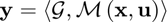
Here,  ,
,  , and
, and  represent the states, inputs, and outputs of sizes
represent the states, inputs, and outputs of sizes  ,
,  , and 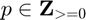=0}$" style="width:57px;height:13px;"> respectively, while 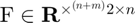 and
, and 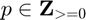=0}$" style="width:57px;height:13px;"> respectively, while 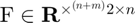 and  are the state-space parameter tensors. While
are the state-space parameter tensors. While  and
and  can have an arbitrary rank, monomial tensors are always rank 1, e.g.,
can have an arbitrary rank, monomial tensors are always rank 1, e.g.,  canonical polyadic decomposition is:
canonical polyadic decomposition is:
![$$
\mathrm{M}\left(\mathbf{x},\mathbf{u}\right) = \left[
\left(\begin{array}{c}1\\x_1\end{array}\right),
\cdots,
\left(\begin{array}{c}1\\x_n\end{array}\right),
\left(\begin{array}{c}1\\u_1\end{array}\right),
\cdots,
\left(\begin{array}{c}1\\u_m\end{array}\right)
\right],
$$](mssDoc_eq08722220137429195979.png)
where each factor has a single column, i.e., rank 1.
Alternatively, mss also supports MTI state-space systems in matrix format:


Here, the parameter matrices are given as  and
and  , and the monomial vector is
, and the monomial vector is

where 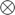 is the Kronecker product.
For efficieny reasons, as seen from the size scaling of each format, mss handles all systems internally in the tensor format.
You can create a MTI state-space model object by either specifying the system and output parameters or by converting a model of another type (such as a linear time-invariant state-space model ss) to MTI state-space form. You can use an mss model object to:
- Simulate an MTI system
- Combine with other MTI models to represent a more complex system
- Linearize an MTI system
For further reference see [1].
Creation
Syntax
|sys = mss(Ftens,Gtens)| |sys = mss(Fmat,Gmat)| |sys = mss(Ftens,Gtens,ts)| |sys = mss(Fmat,Gmat,ts)|
Description
sys = mss(Ftens,Gtens) creates a continuous-time mutlilinear time-invariant state-space model object of the following form:

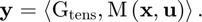
For instance, consider a plant with  states, 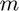 inputs, and 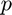 outputs. The state-space tensors are:
states, 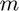 inputs, and 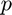 outputs. The state-space tensors are:
-
 is a 2 by
is a 2 by  times 2 by tensor
times 2 by tensor -
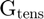 is a 2 by times 2 by tensor
Note that Gtens is an optional input.
sys = mss(Fmat,Gmat) creates a continuous-time mutlilinear time-invariant state-space model object of the following form:


For instance, consider a plant with states, inputs, and outputs. The state-space tensors are:
-
 is a
is a  matrix
matrix -
 is a
is a  matrix
matrix
Note that Gmat is an optional input with a default output 
sys = mss(Ftens,Gtens,ts) creates a discrete-time mutlilinear time-invariant state-space model object of the following form with the sample time ts (in seconds):
![$$
\mathbf{x}\left[k+1\right] = \left\langle \mathrm{F}_\mathrm{tens},
\mathrm{M}\left(\mathbf{x}\left[k\right],\mathbf{u}\left[k\right]\right)\right\rangle
$$](mssDoc_eq04279950790585665827.png)
![$$
\mathbf{y}\left[k\right] = \left\langle \mathrm{G}_\mathrm{tens},
\mathrm{M}\left(\mathbf{x}\left[k\right],\mathbf{u}\left[k\right]\right)\right\rangle
$$](mssDoc_eq17373283979185811135.png)
with discrete time variable  . For instance, consider a plant with states, inputs, and outputs. The state-space tensors are:
. For instance, consider a plant with states, inputs, and outputs. The state-space tensors are:
-
is a 2 by times 2 by tensor
-
is a 2 by times 2 by tensor
Note that Gtens is an optional input.
sys = mss(Fmat,Gmat,ts) creates a discrete-time mutlilinear time-invariant state-space model object of the following form with the sample time ts (in seconds):
![$$
\mathbf{x}\left[k+1\right] = \mathbf{F}_\mathrm{mat}
\mathbf{m}\left(\mathbf{x}\left[k\right],\mathbf{u}\left[k\right]\right) ,
$$](mssDoc_eq11147505553307428227.png)
![$$
\mathbf{y}\left[k\right] = \mathbf{G}_\mathrm{mat}
\mathbf{m}\left(\mathbf{x}\left[k\right],\mathbf{u}\left[k\right]\right)
,
$$](mssDoc_eq02939490512086629945.png)
with discrete time variable . For instance, consider a plant with states, inputs, and outputs. The state-space tensors are:
-
is a by 2 to the power of
 matrix
matrix -
is a by 2 to the power of matrix
Note that Gmat is an optional input.
Input Arguments
Ftens - System tensor
System tensor, specified as a 2 by times 2 by tensor, where, is the number of states and is the number of inputs. This input sets the value of property Ftens.
Ftens accepts the following tensor formats:
- multidimensional array
- CPN1
- otvl
- ktensor from Tensor Toolbox
Gtens - Output tensor
Output tensor, specified as a 2 by times 2 by tensor, where, is the number of states, is the number of inputs, and is the number of outputs. This input sets the value of property Gtens.
Gtens accepts the following tensor formats:
- multidimensional array
- CPN1
- ktensor from Tensor Toolbox
Fmat - System matrix
System matrix, specified as a by 2 to the power of matrix, where, is the number of states and is the number of inputs. This input sets the value of property Fmat.
Gmat - Output matrix
Output matrix, specified as a by 2 to the power of matrix, where, is the number of states, is the number of inputs, and is the number of outputs. This input sets the value of property Gmat.
ts - Sample time
Sample time in seconds, specified as a scalar.
Output Arguments
sys - Output system model
Output system model returned as:
- A multilinear time-invariant state-space (mss) model object, when the inputs and are numeric tensors (or matrices), or when converting from another model object type.
Properties
F - System tensor
System tensor, specified as a 2 by times 2 by tensor, where, is the number of states and is the number of inputs. This property is internally stored in CPN1 format.
G - Output tensor
Output tensor, specified as a 2 by times 2 by tensor, where, is the number of states, is the number of inputs, and is the number of outputs. This property is internally stored in CPN1 format.
n - Number of states
Number of states, specified as an integer  .
.
m - Number of inputs
Number of inputs, specified as an integer  .
.
p - Number of outputs
Number of outputs, specified as an integer  .
.
ts - Sample time
Sample time in seconds, specified as a double  .
.
Object Functions
The following lists contain a representative subset of the functions you can use with or in context of mss model objects.
Multilinear Simulation
| msim | Plot simulated time response of dynamic system to arbitrary inputs; simulated response data |
| linearize | Linearize an explicit multilinear model around an operating point |
| mlinearize | Obtains a continuous or discrete multilinear time-invariant state-space model, within an operating domain, of a Simulink model. |
| mlgreyest | GreyBox parameter identification of MTI model from input-output data in time domain |
| rmss | Generate a random continuous multilinear states-space model |
| c2d | Transform continous time to discrete time mti system |
| c2d | Enable MEX acceleration (experimental) |
Examples
SISO Multilinear Time-Invariant State-Space Model
Create a SISO MTI state-space model defined by the following system equations:


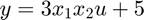
The model has the following parameter matrices

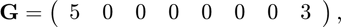
and monomial vector

Specify the  and
and  matrices, and create the MTI state-space model.
matrices, and create the MTI state-space model.
F = [ 0 0 0 1 0.5 0 0 0 ;
7 0 0 0 0 2 0 0];
G = [ 5 0 0 0 0 0 0 3 ;];
sys = mss(F, G)
sys =
mss with properties:
F: [1×1 CPN1]
G: [1×1 CPN1]
n: 2
m: 1
p: 1
ntype: '1'
ts: 0
The same system can be represented in CPN1 format:


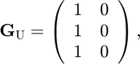

Initialize the and tensors in CPN1 format , and create the MTI state-space model.
F_U = [1 0 1 0;
1 0 0 0;
0 1 1 0];
F_phi = [1 0.5 0 0;
0 0 2 7];
F=CPN1(F_U,F_phi);
G_U = [1 0;
1 0;
1 0];
G_phi = [3 5];
G=CPN1(G_U,G_phi);
sys = mss(F, G)
sys =
mss with properties:
F: [1×1 CPN1]
G: [1×1 CPN1]
n: 2
m: 1
p: 1
ntype: '1'
ts: 0
References
[1] Lichtenberg, Gerwald; Pangalos, Georg; Cateriano Yáñez, Carlos; Luxa, Aline; Jöres, Niklas; Schnelle, Leona; Kaufmann, Christoph (2022): Implicit multilinear modeling. In at - Automatisierungstechnik 70 (1), pp. 13–30. DOI: 10.1515/auto-2021-0133.
See Also
msim